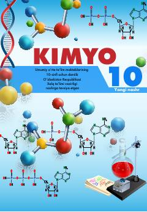

1K10-sinf o'quvchilari uchun organik kimyo fanidan rasmiy darslik.
Mazkur darslik umumiy o'rta ta'lim maktablarining 10-sinf o'quvchilari uchun mo'ljallangan bo'lib, organik kimyo asoslari, uglevodorodlar va kislorodli organik birikmalarni o'rgatadi. Kitobda mavzularga oid nazariy tushunchalar, amaliy mashg'ulotlar va masala-mashqlar keltirilgan.